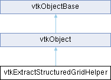

|
Etrek
|
|
Etrek
|
helper for extracting/sub-sampling structured datasets. More...
#include <vtkExtractStructuredGridHelper.h>

Public Member Functions | |
| vtkTypeMacro (vtkExtractStructuredGridHelper, vtkObject) | |
| void | PrintSelf (ostream &os, vtkIndent indent) override |
| vtkGetVector6Macro (OutputWholeExtent, int) | |
| void | Initialize (int voi[6], int wholeExt[6], int sampleRate[3], bool includeBoundary) |
| Initializes the index map. | |
| bool | IsValid () const |
| int | GetSize (int dim) |
| Returns the size along a given dimension. | |
| int | GetMappedIndex (int dim, int outIdx) |
| Given a dimension and output index, return the corresponding extent index. This method should be used to convert array indices, such as the coordinate arrays for rectilinear grids. | |
| int | GetMappedIndexFromExtentValue (int dim, int outExtVal) |
| Given a dimension and output extent value, return the corresponding input extent index. This method should be used to compute extent indices from extent values. | |
| int | GetMappedExtentValue (int dim, int outExtVal) |
| Given a dimension and output extent value, return the corresponding input extent value. This method should be used to convert extent values. | |
| int | GetMappedExtentValueFromIndex (int dim, int outIdx) |
| Given a dimension and output extent index, return the corresponding input extent value. This method should be used to compute extent values from extent indices. | |
| void | ComputeBeginAndEnd (int inExt[6], int voi[6], int begin[3], int end[3]) |
| Returns the begin & end extent that intersects with the VOI. | |
| void | CopyPointsAndPointData (int inExt[6], int outExt[6], vtkPointData *pd, vtkPoints *inpnts, vtkPointData *outPD, vtkPoints *outpnts) |
| Copies the points & point data to the output. | |
| void | CopyCellData (int inExt[6], int outExt[6], vtkCellData *cd, vtkCellData *outCD) |
| Copies the cell data to the output. | |
| Public Member Functions inherited from vtkObject | |
| vtkBaseTypeMacro (vtkObject, vtkObjectBase) | |
| virtual void | DebugOn () |
| virtual void | DebugOff () |
| bool | GetDebug () |
| void | SetDebug (bool debugFlag) |
| virtual void | Modified () |
| virtual vtkMTimeType | GetMTime () |
| void | PrintSelf (ostream &os, vtkIndent indent) override |
| void | RemoveObserver (unsigned long tag) |
| void | RemoveObservers (unsigned long event) |
| void | RemoveObservers (const char *event) |
| void | RemoveAllObservers () |
| vtkTypeBool | HasObserver (unsigned long event) |
| vtkTypeBool | HasObserver (const char *event) |
| vtkTypeBool | InvokeEvent (unsigned long event) |
| vtkTypeBool | InvokeEvent (const char *event) |
| std::string | GetObjectDescription () const override |
| unsigned long | AddObserver (unsigned long event, vtkCommand *, float priority=0.0f) |
| unsigned long | AddObserver (const char *event, vtkCommand *, float priority=0.0f) |
| vtkCommand * | GetCommand (unsigned long tag) |
| void | RemoveObserver (vtkCommand *) |
| void | RemoveObservers (unsigned long event, vtkCommand *) |
| void | RemoveObservers (const char *event, vtkCommand *) |
| vtkTypeBool | HasObserver (unsigned long event, vtkCommand *) |
| vtkTypeBool | HasObserver (const char *event, vtkCommand *) |
| template<class U, class T> | |
| unsigned long | AddObserver (unsigned long event, U observer, void(T::*callback)(), float priority=0.0f) |
| template<class U, class T> | |
| unsigned long | AddObserver (unsigned long event, U observer, void(T::*callback)(vtkObject *, unsigned long, void *), float priority=0.0f) |
| template<class U, class T> | |
| unsigned long | AddObserver (unsigned long event, U observer, bool(T::*callback)(vtkObject *, unsigned long, void *), float priority=0.0f) |
| vtkTypeBool | InvokeEvent (unsigned long event, void *callData) |
| vtkTypeBool | InvokeEvent (const char *event, void *callData) |
| virtual void | SetObjectName (const std::string &objectName) |
| virtual std::string | GetObjectName () const |
| Public Member Functions inherited from vtkObjectBase | |
| const char * | GetClassName () const |
| virtual vtkTypeBool | IsA (const char *name) |
| virtual vtkIdType | GetNumberOfGenerationsFromBase (const char *name) |
| virtual void | Delete () |
| virtual void | FastDelete () |
| void | InitializeObjectBase () |
| void | Print (ostream &os) |
| void | Register (vtkObjectBase *o) |
| virtual void | UnRegister (vtkObjectBase *o) |
| int | GetReferenceCount () |
| void | SetReferenceCount (int) |
| bool | GetIsInMemkind () const |
| virtual void | PrintHeader (ostream &os, vtkIndent indent) |
| virtual void | PrintTrailer (ostream &os, vtkIndent indent) |
| virtual bool | UsesGarbageCollector () const |
Static Public Member Functions | |
| static vtkExtractStructuredGridHelper * | New () |
| static void | GetPartitionedVOI (const int globalVOI[6], const int partitionedExtent[6], const int sampleRate[3], bool includeBoundary, int partitionedVOI[6]) |
| static void | GetPartitionedOutputExtent (const int globalVOI[6], const int partitionedVOI[6], const int outputWholeExtent[6], const int sampleRate[3], bool includeBoundary, int partitionedOutputExtent[6]) |
| Static Public Member Functions inherited from vtkObject | |
| static vtkObject * | New () |
| static void | BreakOnError () |
| static void | SetGlobalWarningDisplay (vtkTypeBool val) |
| static void | GlobalWarningDisplayOn () |
| static void | GlobalWarningDisplayOff () |
| static vtkTypeBool | GetGlobalWarningDisplay () |
| Static Public Member Functions inherited from vtkObjectBase | |
| static vtkTypeBool | IsTypeOf (const char *name) |
| static vtkIdType | GetNumberOfGenerationsFromBaseType (const char *name) |
| static vtkObjectBase * | New () |
| static void | SetMemkindDirectory (const char *directoryname) |
| static bool | GetUsingMemkind () |
Protected Member Functions | |
| void | Invalidate () |
| Invalidates the output extent. | |
| Protected Member Functions inherited from vtkObject | |
| void | RegisterInternal (vtkObjectBase *, vtkTypeBool check) override |
| void | UnRegisterInternal (vtkObjectBase *, vtkTypeBool check) override |
| void | InternalGrabFocus (vtkCommand *mouseEvents, vtkCommand *keypressEvents=nullptr) |
| void | InternalReleaseFocus () |
| Protected Member Functions inherited from vtkObjectBase | |
| virtual void | ReportReferences (vtkGarbageCollector *) |
| vtkObjectBase (const vtkObjectBase &) | |
| void | operator= (const vtkObjectBase &) |
Protected Attributes | |
| int | VOI [6] |
| int | InputWholeExtent [6] |
| int | SampleRate [3] |
| bool | IncludeBoundary |
| int | OutputWholeExtent [6] |
| vtk::detail::vtkIndexMap * | IndexMap |
| Protected Attributes inherited from vtkObject | |
| bool | Debug |
| vtkTimeStamp | MTime |
| vtkSubjectHelper * | SubjectHelper |
| std::string | ObjectName |
| Protected Attributes inherited from vtkObjectBase | |
| std::atomic< int32_t > | ReferenceCount |
| vtkWeakPointerBase ** | WeakPointers |
Additional Inherited Members | |
| Static Protected Member Functions inherited from vtkObjectBase | |
| static vtkMallocingFunction | GetCurrentMallocFunction () |
| static vtkReallocingFunction | GetCurrentReallocFunction () |
| static vtkFreeingFunction | GetCurrentFreeFunction () |
| static vtkFreeingFunction | GetAlternateFreeFunction () |
helper for extracting/sub-sampling structured datasets.
vtkExtractStructuredGridHelper provides some common functionality that is used by filters that extract and sub-sample structured data. Specifically, it provides functionality for calculating the mapping from the output extent of each process to the input extent.
| void vtkExtractStructuredGridHelper::ComputeBeginAndEnd | ( | int | inExt[6], |
| int | voi[6], | ||
| int | begin[3], | ||
| int | end[3] ) |
Returns the begin & end extent that intersects with the VOI.
| inExt | the input extent |
| voi | the volume of interest |
| begin | the begin extent |
| end | the end extent |
| void vtkExtractStructuredGridHelper::CopyCellData | ( | int | inExt[6], |
| int | outExt[6], | ||
| vtkCellData * | cd, | ||
| vtkCellData * | outCD ) |
Copies the cell data to the output.
| inExt | the input grid extent. |
| outExt | the output grid extent. |
| cd | the input cell data. |
| outCD | the output cell data. |
| void vtkExtractStructuredGridHelper::CopyPointsAndPointData | ( | int | inExt[6], |
| int | outExt[6], | ||
| vtkPointData * | pd, | ||
| vtkPoints * | inpnts, | ||
| vtkPointData * | outPD, | ||
| vtkPoints * | outpnts ) |
Copies the points & point data to the output.
| inExt | the input grid extent. |
| outExt | the output grid extent. |
| pd | pointer to the input point data. |
| inpnts | pointer to the input points, or nullptr if uniform grid. |
| outPD | point to the output point data. |
| outpnts | pointer to the output points, or nullptr if uniform grid. |
| int vtkExtractStructuredGridHelper::GetMappedExtentValue | ( | int | dim, |
| int | outExtVal ) |
Given a dimension and output extent value, return the corresponding input extent value. This method should be used to convert extent values.
| dim | the data dimension. |
| outExtVal | The output extent value along the given dimension. |
| int vtkExtractStructuredGridHelper::GetMappedExtentValueFromIndex | ( | int | dim, |
| int | outIdx ) |
Given a dimension and output extent index, return the corresponding input extent value. This method should be used to compute extent values from extent indices.
| dim | the data dimension. |
| outIdx | The output index along the given dimension. |
| int vtkExtractStructuredGridHelper::GetMappedIndex | ( | int | dim, |
| int | outIdx ) |
Given a dimension and output index, return the corresponding extent index. This method should be used to convert array indices, such as the coordinate arrays for rectilinear grids.
| dim | the data dimension |
| outIdx | The output index along the given dimension. |
| int vtkExtractStructuredGridHelper::GetMappedIndexFromExtentValue | ( | int | dim, |
| int | outExtVal ) |
Given a dimension and output extent value, return the corresponding input extent index. This method should be used to compute extent indices from extent values.
| dim | the data dimension |
| outExtVal | The output extent value along the given dimension. |
|
static |
Calculate the partitioned output extent for a partitioned structured dataset. This method sets partitionedOutputExtent to the correct extent of an extracted dataset, such that it properly fits with the other partitioned pieces while considering the globalVOI, the sampleRate, and the boundary conditions.
| globalVOI | The full VOI for the entire distributed dataset. |
| partitionedVOI | The VOI used in the serial extraction. |
| outputWholeExtent | The output extent of the full dataset. |
| sampleRate | The sampling rate in each dimension. |
| includeBoundary | Whether or not to include the boundary of the VOI, even if it doesn't fit the spacing. |
| partitionedOutputExtent | The correct output extent of the extracted dataset. |
|
static |
Calculate the VOI for a partitioned structured dataset. This method sets partitionedVOI to the VOI that extracts as much of the partitionedExtent as possible while considering the globalVOI, the sampleRate, and the boundary conditions.
| globalVOI | The full VOI for the entire distributed dataset. |
| partitionedExtent | Extent of the process's partitioned input data. |
| sampleRate | The sampling rate in each dimension. |
| includeBoundary | Whether or not to include the boundary of the VOI, even if it doesn't fit the spacing. |
| partitionedVOI | The extent of the process's partitioned dataset that should be extracted by a serial extraction filter. |
| int vtkExtractStructuredGridHelper::GetSize | ( | int | dim | ) |
Returns the size along a given dimension.
| dim | the dimension in query |
| void vtkExtractStructuredGridHelper::Initialize | ( | int | voi[6], |
| int | wholeExt[6], | ||
| int | sampleRate[3], | ||
| bool | includeBoundary ) |
Initializes the index map.
| voi | the extent of the volume of interest |
| wholeExt | the whole extent of the domain |
| sampleRate | the sampling rate |
| includeBoundary | indicates whether to include the boundary or not. |
| bool vtkExtractStructuredGridHelper::IsValid | ( | ) | const |
Returns true if the helper is properly initialized.
|
overridevirtual |
Methods invoked by print to print information about the object including superclasses. Typically not called by the user (use Print() instead) but used in the hierarchical print process to combine the output of several classes.
Reimplemented from vtkObjectBase.